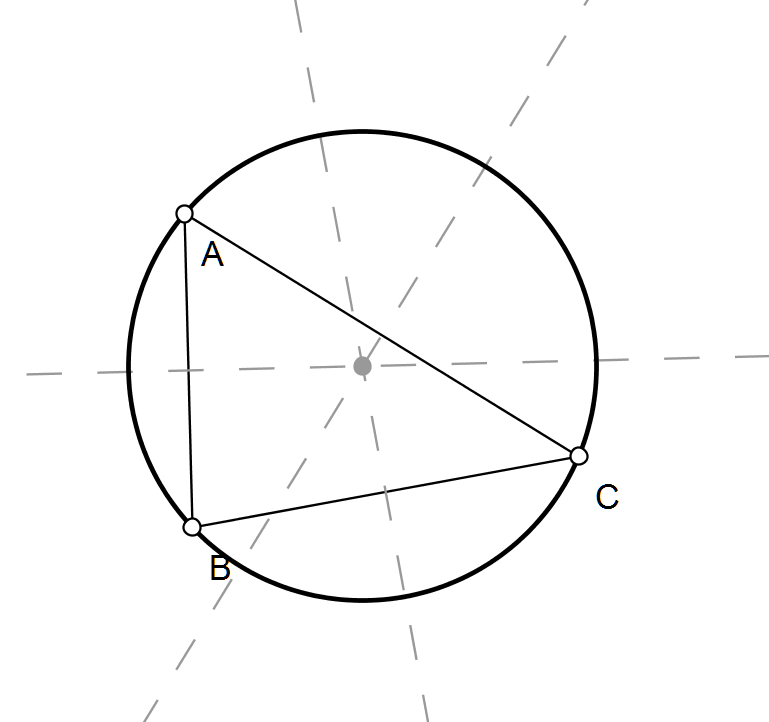
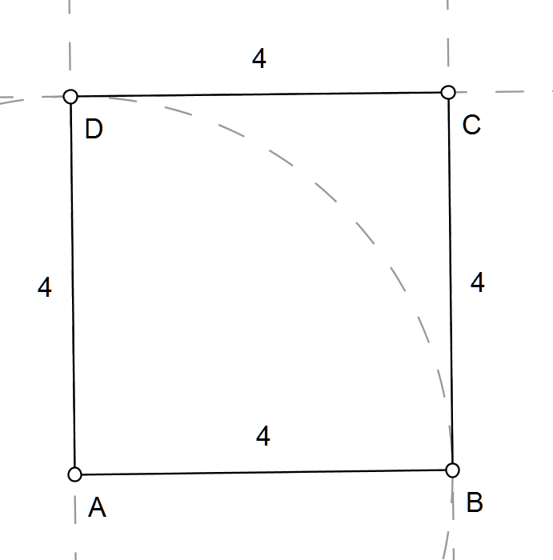
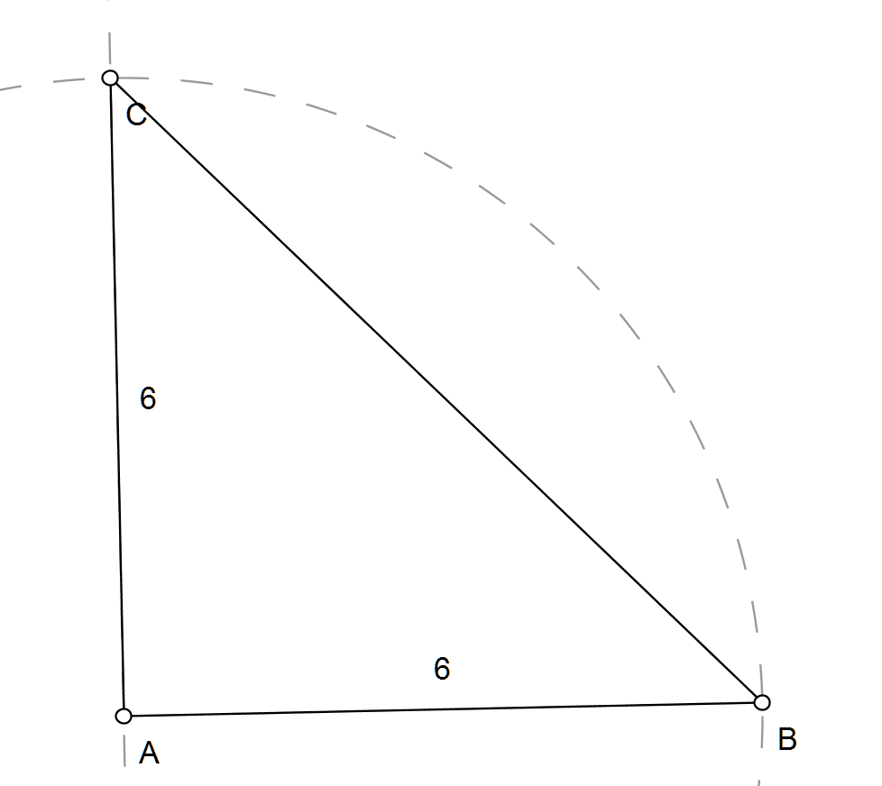
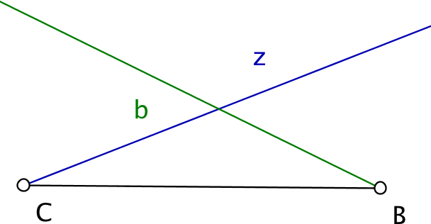
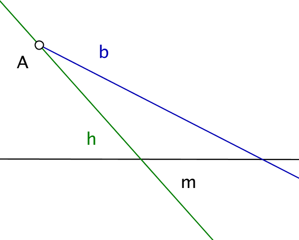

De omcirkel van een driehoek is de cirkel die door de drie hoekpunten van de driehoek gaan. Teken een willekeurige driehoek ABC en zijn omcirkel. Het middelpunt van de omcirkel is het snijpunt van de middelloodlijnen.
Teken een vierkant met zijde 4.
Teken een rechthoekige, gelijkbenige driehoek waarbij de lengte van de gelijke benen gelijk is aan 6.
Teken een driehoek met zijde 4 en 8. De hoek tussen beide zijden is gelijk aan 70°.
De driehoek ABC is rechthoekig in A. De lengte van de zijde AC bedraagt 4. De lengte van de zwaartelijn uit C is gelijk aan 7. Teken de driehoek ABC. De zwaartelijn uit C is de rechte door C en door het midden van AB.
Construeer een parallellogram ABCD waarbij d(A,B) = 6, d(B,C) = 4 en de afstand tussen de rechten AB en CD gelijk is aan 3. De afstand tussen twee evenwijdige rechten is de lengte van het lijnstuk loodrecht tussen beide rechten.
In onderstaande figuur zie je het lijnstuk BC, de bissectrice b van de hoek ABC en de zwaartelijn z op zijde AB. Teken de driehoek ABC.
Construeer de driehoek ABC waarvoor geldt dat m de middelloodlijn is van het lijnstuk AC; h de hoogtelijn uit A op BC en b de bissectrice is van de hoek BAC. De hoogtelijn uit A staat loodrecht op BC.
